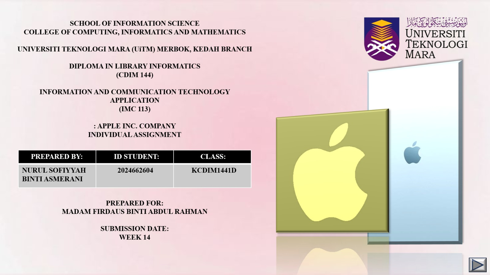

My journey and activities
During my studies at UiTM Kedah, I gained valuable experiences that strengthened both my technical and interpersonal skills. I worked on developing and refining my personal website layout, focusing on menu design, dropdown alignment, and pastel aesthetics to create a clean, user‑friendly interface. These projects taught me the importance of detail and creativity in web development. Beyond technical work, I observed librarian–user interactions, learning how greetings, tone, and responsiveness influence user satisfaction. Through these experiences, I discovered how design and service quality complement each other, while also improving my problem‑solving and time management skills. On the right side, is my individual projects related to designing.
